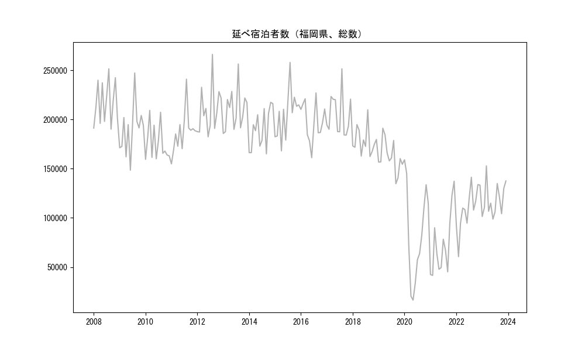
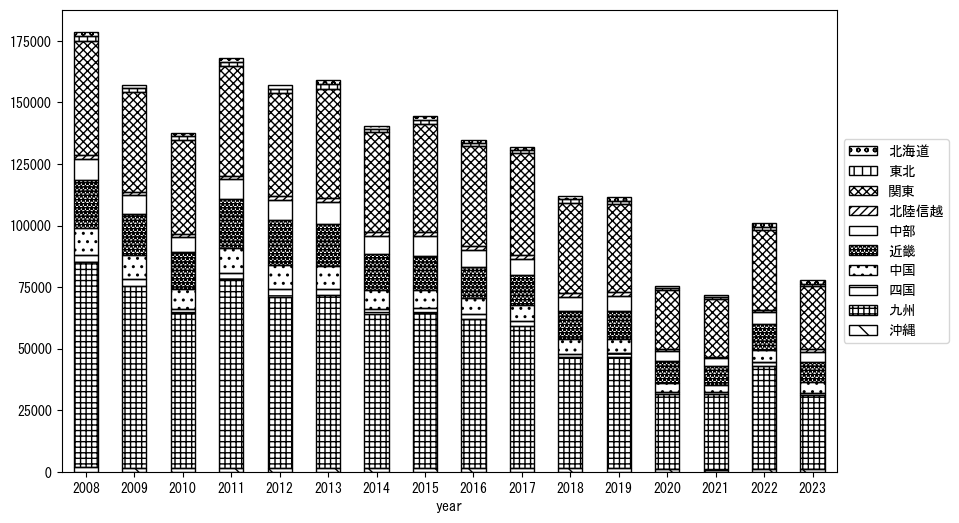
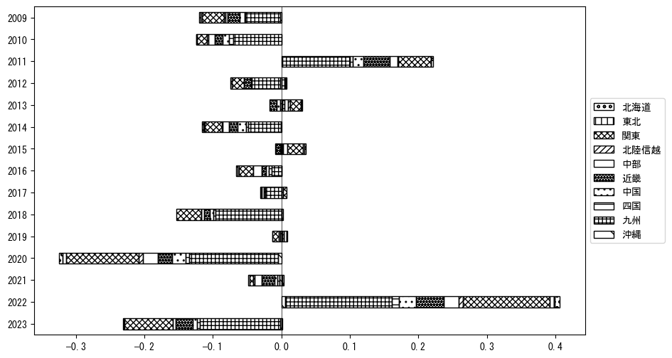
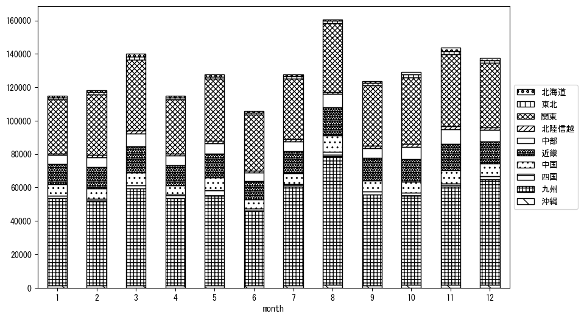
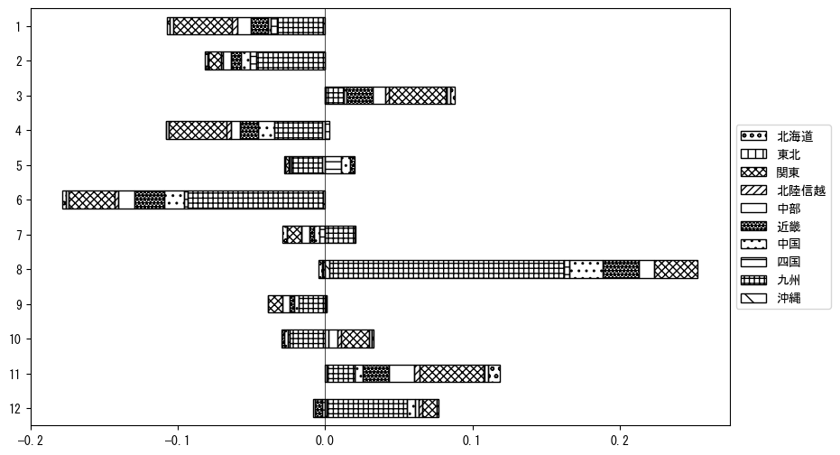

-
トップ
-
福岡県
福岡県
１．延べ宿泊者（総数）の推移
時系列グラフ

図１：福岡県内の従業員数100人以上の宿泊施設での延べ宿泊者数（国外、居住地不詳を含む総数）。
基本統計量
表１：従業員数100人以上の宿泊施設での延べ宿泊者の総数（国外、および居住地不詳を含む）に関する基本統計量。単位は人。平均は１か月あたりの平均値を表す。図１に対応。
| 2008年 |
216,878 |
21,920 |
190,274 (9月) |
251,566 (8月) |
| 2009年 |
190,146 |
25,081 |
148,529 (6月) |
247,396 (8月) |
| 2010年 |
176,179 |
18,341 |
159,554 (1月) |
209,345 (3月) |
| 2011年 |
187,269 |
21,266 |
154,923 (1月) |
241,063 (8月) |
| 2012年 |
209,456 |
24,492 |
182,441 (6月) |
266,247 (8月) |
| 2013年 |
209,664 |
20,801 |
185,868 (1月) |
256,500 (8月) |
| 2014年 |
190,736 |
20,326 |
165,116 (9月) |
217,512 (11月) |
| 2015年 |
205,511 |
24,348 |
168,150 (4月) |
258,077 (8月) |
| 2016年 |
197,818 |
19,584 |
161,228 (6月) |
227,060 (8月) |
| 2017年 |
204,869 |
21,675 |
184,228 (10月) |
251,650 (8月) |
| 2018年 |
178,181 |
13,881 |
162,412 (9月) |
209,931 (8月) |
| 2019年 |
161,948 |
16,489 |
134,737 (9月) |
191,201 (3月) |
| 2020年 |
84,124 |
48,476 |
16,391 (5月) |
159,078 (1月) |
| 2021年 |
73,403 |
32,248 |
41,514 (2月) |
137,254 (12月) |
| 2022年 |
109,531 |
22,248 |
60,574 (2月) |
141,309 (8月) |
| 2023年 |
118,293 |
17,067 |
98,737 (6月) |
152,907 (3月) |
２．宿泊者数の重心（年平均の推移）
図２：福岡県内の従業員数100人以上の宿泊施設での宿泊者数（国外、居住地不詳を除く）の重心（年平均の推移）。
全画面表示
重心の前年平均からの移動距離と方位、および緯度・経度
表２：重心の前年平均からの移動距離と方位、および緯度・経度。図２に対応。
| 2008年 |
— |
— |
34.3244 |
134.1106 |
| 2009年 |
西南西 |
2.6km |
34.3166 |
134.0835 |
| 2010年 |
東 |
15.6km |
34.3375 |
134.2510 |
| 2011年 |
西南西 |
5.2km |
34.3263 |
134.1963 |
| 2012年 |
北東 |
8.9km |
34.3740 |
134.2738 |
| 2013年 |
東北東 |
8.9km |
34.4039 |
134.3636 |
| 2014年 |
東 |
1.5km |
34.4015 |
134.3801 |
| 2015年 |
東北東 |
12.9km |
34.4477 |
134.5087 |
| 2016年 |
西南西 |
9.1km |
34.4217 |
134.4148 |
| 2017年 |
東北東 |
10.1km |
34.4410 |
134.5224 |
| 2018年 |
東北東 |
24.3km |
34.5094 |
134.7741 |
| 2019年 |
西北西 |
3.1km |
34.5225 |
134.7442 |
| 2020年 |
西南西 |
18.1km |
34.4808 |
134.5541 |
| 2021年 |
東北東 |
9.0km |
34.5194 |
134.6399 |
| 2022年 |
東北東 |
4.8km |
34.5340 |
134.6889 |
| 2023年 |
東北東 |
18.3km |
34.6009 |
134.8709 |
運輸局別延べ宿泊者数
時系列（年平均）

図３：福岡県内の従業員数100人以上の宿泊施設での１か月あたり平均宿泊者数（国外、居住地不詳を除く）の運輸局別内訳。
寄与度（前年からの変化率に対する）

図４：福岡県内の従業員数100人以上の宿泊施設での運輸局別宿泊者数（国外、居住地不詳を除く）から求めた寄与度。
３．宿泊者数の重心（月別）
図５：福岡県内の従業員数100人以上の宿泊施設での宿泊者数（国外、居住地不詳を除く）の重心（月別）。観測期間は2008年1月から2023年12月まで。
全画面表示
全期間（2008年1月～2023年12月）の平均と月別平均の比較
表３：全期間の平均から月別平均までの移動距離と方位、および緯度・経度。図５に対応。
| 全期間 |
— |
— |
34.4351 |
134.4611 |
| 1月 |
西南西 |
17.0km |
34.3831 |
134.2874 |
| 2月 |
東 |
10.1km |
34.4429 |
134.5703 |
| 3月 |
東北東 |
20.9km |
34.5164 |
134.6662 |
| 4月 |
西 |
13.1km |
34.4345 |
134.3185 |
| 5月 |
東 |
4.7km |
34.4356 |
134.5127 |
| 6月 |
東北東 |
18.6km |
34.4776 |
134.6563 |
| 7月 |
西南西 |
15.6km |
34.3782 |
134.3060 |
| 8月 |
西南西 |
40.6km |
34.2843 |
134.0591 |
| 9月 |
南東 |
1.5km |
34.4245 |
134.4708 |
| 10月 |
東北東 |
21.5km |
34.4956 |
134.6835 |
| 11月 |
東北東 |
25.8km |
34.5473 |
134.7075 |
| 12月 |
西南西 |
15.8km |
34.4012 |
134.2943 |
運輸局別延べ宿泊者数
月別平均（2008年1月～2023年12月）

図６：福岡県内の従業員数100人以上の宿泊施設での宿泊者数（国外、居住地不詳を除く）の運輸局別内訳（月別）。
寄与度（全期間の平均から月別平均への変化率に対する）

図７：福岡県内の従業員数100人以上の宿泊施設での運輸局別宿泊者数（国外、居住地不詳を除く）から求めた寄与度（月別）。
４．データのダウンロード
出典：観光庁「宿泊旅行統計調査」に収録された「施設所在地別、居住地別延べ宿泊者数（従業員数100人以上の施設）」
国土地理院「白地図（地理院タイル）」（図２と図５）